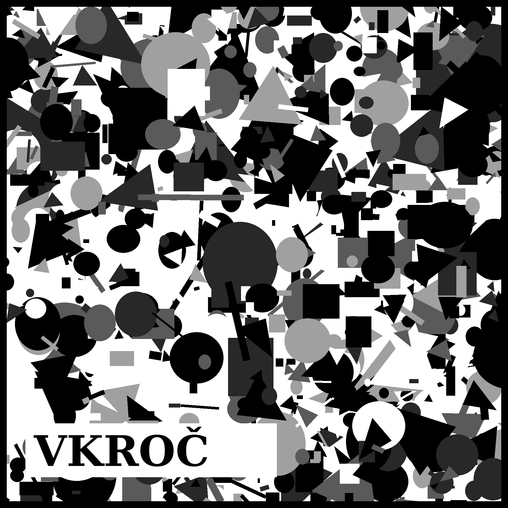

VKROČ · tabuľa pre AR

- Tlačte v mierke 100 % (vypnite „prispôsobiť stránke“). Čierny pás dole musí mať presne 10 cm a obrázok hore presne 18 cm.
- Nalepte na tvrdú rovnú dosku, matný papier (lesk ruší rozpoznanie).
- Postavte tabuľu na ľavý predný roh domu (pri pohľade z ulice), lícom k ulici, zvislo. Stred obrázka vo výške 1,00 m nad terénom (alebo podľa nastavenia v štúdiu).
- V štúdiu: 3D → AR → Ukotviť na tabuľu → Otvoriť v AR a namierte telefón na tabuľu zo vzdialenosti 1–2 m.
10 cm – kontrola mierky tlače